Lincoln Lectures On Graphics - 03
Pipeline Overview
Putting the "Fun" in Fundamentals
Vertices in World Space
The pipeline is fed (somehow, we'll cover later) with vertices in WORLD SPACE (or Object Space)
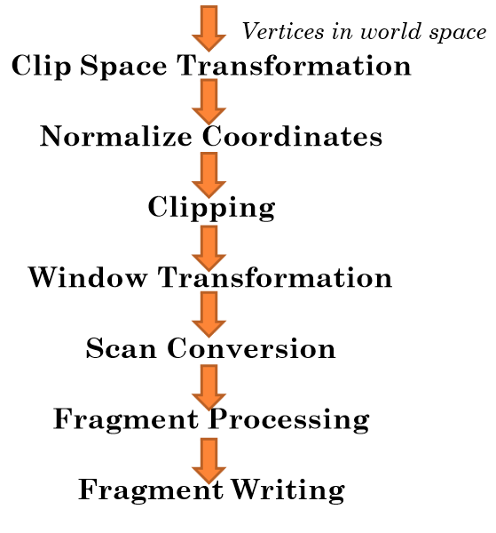
Clip Space Transformation
- Transform the vertices into a certain region of space
- in OpenGL this is called clip space
- Also known as projection transformation
- http://arcsynthesis.org/gltut/Basics/Intro%20Graphics%20and%20Rendering.html
- you get to program this bit (GLSL - vertex shader)
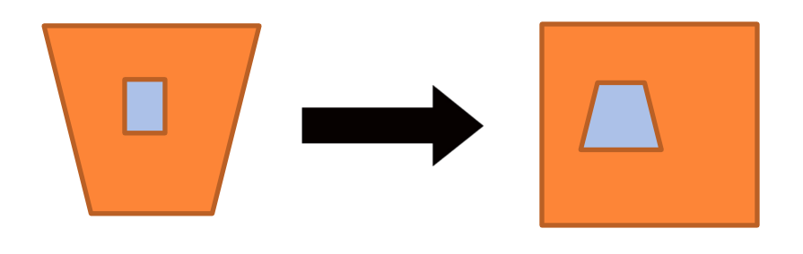
Homogeneous Coordinates!!
- X,Y,Z and W!!!
- W defines what the extents of clip space are for this vertex (-W to W on X, Y, Z)
- The process of transforming vertices into clip space is arbitrary (stupid)
- OpenGL provides a lot of flexibility in this step
- i.e. programmable flexibility!
- We'll cover homogeneous coordinates more later
- http://www.tomdalling.com/blog/modern-opengl/explaining-homogenous-coordinates-and-projective-geometry/
- http://www.songho.ca/math/homogeneous/homogeneous.html
Vertices in Clip Space
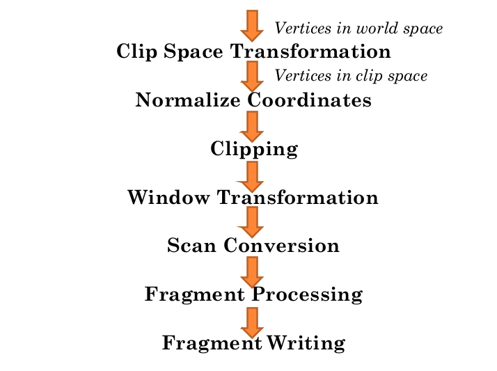
Clipping
- Triangles not fully in clip space (the [-1,1] cube) we want to clip
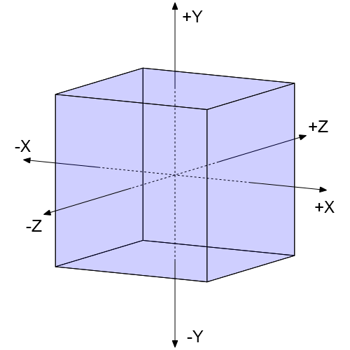
Clipping 2
- Points are easy to test in our new, normalised coordinate space (NDC)
- Lines are more difficult
- Triangles are complicated
- may need to make more triangles
Vertices in Normalized Device Coordinates
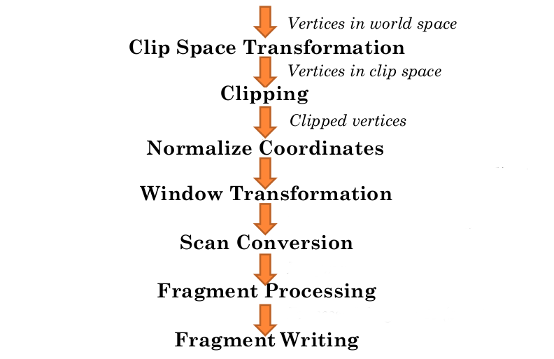
Normalized Device Coordinates
- Clip space is interesting, but inconvenient
- the extent of this space is different for each vertex, which makes visualizing a triangle rather difficult
- The X, Y, and Z of each vertex's position is divided by W to get normalized device coordinates
- basically the same as clip space except that the range of X, Y and Z are [-1, 1]
Vertices in NDC
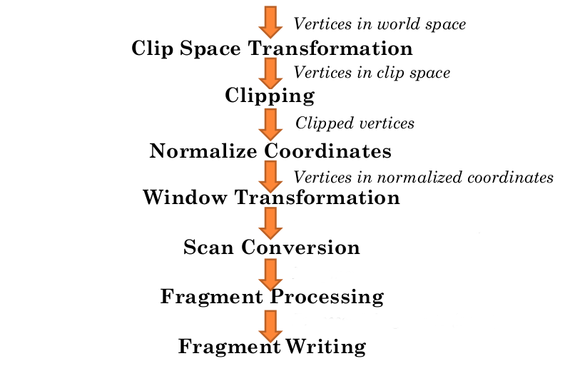
Window Transformation
- Transform from normalized device coordinates towindow coordinates
- window coordinates are relative to the window that OpenGL is running within
- Though they refer to the window, they are still three dimensional coordinates
- still floating-point values
- still have a z-coordinates!! Why?? Stay-tuned ...
- bottom-left position is the origin (0, 0)
Vertices in Window Coordinates
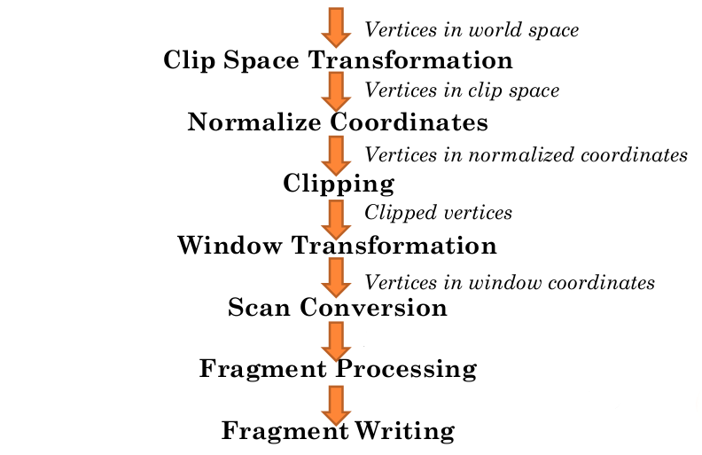
Scan Conversion
- After conversion to window coordinates the triangle undergoes a process called scan conversion
- also known as rasterization
- Takes the triangle and generates fragments that cover the area of the triangle
- also fills in pixels for lines
- We'll look later at how scan conversion can be done
Scan Conversion (triangles again)
- Image in the centre shows the digital grid of output pixels
- the circles represent the centre of each pixel, the centre of each pixel represents a sample:
- a discrete location within the area of a pixel
- the circles represent the centre of each pixel, the centre of each pixel represents a sample:
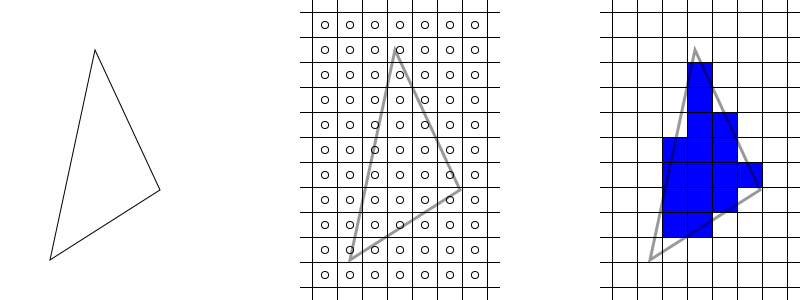
Scan Conversion (more triangles)
- During scan conversion, a triangle will produce a fragment for every pixel sample that is within the 2D area of the triangle (right)
- a rough approximation of the triangle's general shape
Scan Conversion
Shared Edges and the invariance guarantee (By Tom Clancy)
- triangles that share edges are very often rendered (unless you’re making asteroids)
- OpenGL offers the invariance guarantee
- so long as shared edge vertex positions are identical, there will be no sample gaps during scan conversion
- What would happen otherwise??
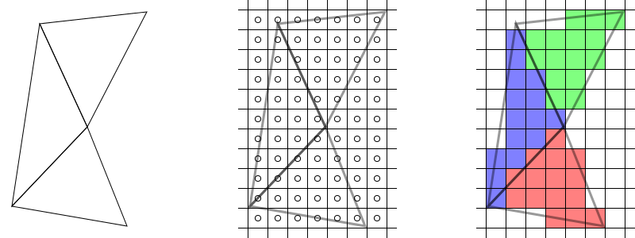
Scan Conversion (Still??)
- Scan conversion only uses X and Y position of the triangle in window coordinates to determine which fragments to generate
- the Z value is not forgotten!
- The result of scan converting a triangle is a sequence of fragments that cover the shape of the triangle
- each fragment has data associated with it
- the 2D location of the fragment in window coordinates
- the Z position of the fragment
- (a.k.a. known as the depth of the fragment)
- there may be other information that is part of a fragment
- each fragment has data associated with it
Fragments
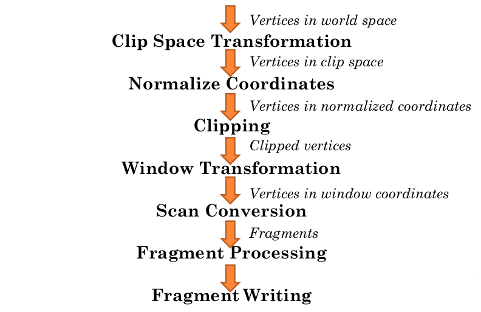
Fragment Processing
- Fragment processing takes a fragment from scan converted triangle and transforms it into
- one or more colour values
- a single depth value (z value)
- you get to program this bit (GLSL - fragment shader)
- The order that fragments from a single triangle are processed in is irrelevant
- unlike the order that triangles are pumped into the pipeline, a single triangle lies in a single plane so fragments generated from it cannot overlap
- However, the fragments from another triangle might
- Therefore, fragments from one triangle must all be processed before fragments from another triangle
Processed Fragments
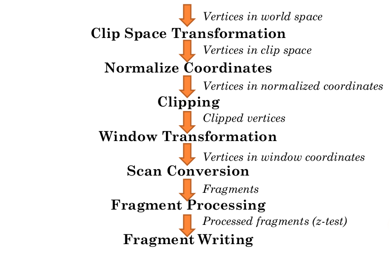
Fragment Writing (maybe)
- After generating one or more colours and a depth value
- the fragment is possibly written to the destination (probably a frame buffer)
- What might control this?
- This step involves more than simply writing to the destination image
- These will be covered more later
Colours
Colours
- The usual description of a colour is as a series of numbers on the range [0, 1] Why [0,1]?
- each of the numbers corresponds to the intensity of a particular reference colour
- the final colour represented by the series of numbers is a mix of these reference colours
- The set of reference colours is called a colour space.
- the most common colour space for screens is RGB, where the reference colours are Red, Green and Blue
- printed works tend to use CMYK (Cyan, Magenta, Yellow, Black)]

Colours 2
- Combining different intensities of this 3 colours, we can generate and display millions of different colour shades in OpenGL
- how many colours? what is the usual representation?
- in most conditions more than the human eye can perceive
- any special conditions?
- unless you're a tetrachromat ... http://www.post-gazette.com/pg/06256/721190-114.stm
Shaders
Shaders
- A shader is a program designed to be run on a renderer as part of the rendering operation
- Regardless of the kind of rendering system in use, shaders can only be executed at certain points in the rendering process
- These shader stages represent hooks where we can insert our code to create specific visual effects, for example:
- transformation of an incoming vertex to clip space is a useful hook for user-defined code
- the processing of a fragment into final colours and depth
Shaders 2 (GLSL)
- Shaders for OpenGL are run on the actual rendering hardware so free up valuable CPU time for other tasks
- and usually the graphics card has orders of magnitude more raw, though specialist processing power available
- GeForce GTX 760 Ti - 2460 GFLOPS single-precision!!
- Or perform operations that would be difficult if not impossible without the flexibility of executing arbitrary code
- however, they live within certain limits that CPU code would not have to ...
- ?? any guess what limits ??
- There are a number of shading languages available to various APIs. The one used here is the primary shading language of OpenGL, the OpenGL Shading Language, or GLSL. for short
- It looks deceptively like C, but it is very much not C
Shaders 3 (GLSL)
#version 330
layout(location = 0) in vec4 position;
uniform float loopDuration;
uniform float time;
void main()
{
float timeScale = 3.14159f * 2.0f / loopDuration;
float currTime = mod(time, loopDuration);
vec4 totalOffset = vec4(
cos(currTime * timeScale) * 0.5f,
sin(currTime * timeScale) * 0.5f,
0.0f,
0.0f);
gl_Position = position + totalOffset;
}Links about Graphics
OpenGL 3.0 onwards
- http://open.gl/
- http://duriansoftware.com/joe/An-intro-to-modern-OpenGL.-Chapter-1%3a-The-Graphics-Pipeline.html
- http://www.arcsynthesis.org/gltut/
- http://antongerdelan.net/opengl/index.html
- https://github.com/capnramses/antons_opengl_tutorials_book
- Kindle Book (~£3.62) - http://www.amazon.co.uk/Antons-OpenGL-Tutorials-Anton-Gerdelan-ebook/dp/B00LAMQYF2
- https://bitbucket.org/alfonse/gltut/src
- http://en.wikibooks.org/wiki/OpenGL_Programming/Modern_OpenGL_Introduction
- http://www.daveshreiner.com/SIGGRAPH/s11/Modern-OpenGL.pdf
- http://fgiesen.wordpress.com/2011/07/09/a-trip-through-the-graphics-pipeline-2011-index/
OpenGL 3.0 onwards 2
- http://gamedev.stackexchange.com/questions/32876/good-resources-for-learning-modern-opengl-3-0-or-later
- https://github.com/g-truc/ogl-samples
- OpenGLSuperBible (6th edition) Examples https://github.com/openglsuperbible/sb6code/tree/master/src
- Open Media Engine OpenGL 4 Tutorials http://openme.gl/opengl-4-tutorial-code/
- OpenGL 4.3/4.4 example using SDL2 and GLM http://openme.gl/opengl-4-x-example-using-sdl2-and-glm/
- Swiftless tutorials http://www.swiftless.com/opengl4tuts.html
- http://www.tomdalling.com/blog/category/modern-opengl/
- NYU graphics slides (and example code, and some CC0 assets - https://github.com/ivansafrin/CS3113/tree/master/class_slides - NOTE: most of this is only using modern (3.0+) OpenGL through extensions. So be aware that a number of the features being used no longer exist. But the concepts are clear.
Texturing
- http://www.tomdalling.com/blog/modern-opengl/02-textures/
- https://www.opengl.org/wiki/Texture
- http://ogldev.atspace.co.uk/www/tutorial16/tutorial16.html
- https://github.com/progschj/OpenGL-Examples/blob/master/03texture.cpp
- https://www.youtube.com/watch?v=UBxB8H4e_5I&list=UUL5m1_llmeiAdZMo_ZanIvg
- http://www.mbsoftworks.sk/index.php?page=tutorials&series=1&tutorial=9
- http://www.lighthouse3d.com/tutorials/glsl-core-tutorial/glsl-core-tutorial-texturing-with-images/
Lighting
- http://www.lighthouse3d.com/tutorials/glsl-core-tutorial/directional-lights/
- http://en.wikibooks.org/wiki/GLSL_Programming/GLUT/Specular_Highlights
- http://www.gamedev.net/page/resources/_/technical/opengl/the-basics-of-glsl-40-shaders-r2861
Context Creation (mostly SDL2)
- https://open.gl/context
- https://www.libsdl.org/index.php
- https://www.youtube.com/watch?v=MeMPCSqQ-34
- https://github.com/BennyQBD/ModernOpenGLTutorial
- https://www.youtube.com/watch?v=ftiKrP3gW3k&list=PLEETnX-uPtBXT9T-hD0Bj31DSnwio-ywh
- Setting up SDL2 in Visual Studio (2013 or any other) http://www.programmersranch.com/2014/02/sdl2-setting-up-sdl2-in-visual-studio.html
- 2D tutorials with SDL2 http://lazyfoo.net/tutorials/SDL/index.php
- SDL2 migration guide https://wiki.libsdl.org/MigrationGuide
Context Creation (non-SDL)
- Unofficial OpenGL Software Development Kit http://glsdk.sourceforge.net/docs/html/index.html
- FreeGlut http://freeglut.sourceforge.net/
- Simple and Fast Multimedia Library http://www.sfml-dev.org/
- GLFW http://www.glfw.org/
platform-specific Context Creation
#include <windows.h>
#include <GL/GL.h>
#pragma comment (lib, "opengl32.lib")
LRESULT CALLBACK WndProc(HWND hWnd, UINT message, WPARAM wParam, LPARAM lParam);
int WinMain( __in HINSTANCE hInstance, __in_opt HINSTANCE hPrevInstance, __in_opt LPSTR lpCmdLine, __in int nShowCmd )
{
MSG msg = {0};
WNDCLASS wc = {0};
wc.lpfnWndProc = WndProc;
wc.hInstance = hInstance;
wc.hbrBackground = (HBRUSH)(COLOR_BACKGROUND);
wc.lpszClassName = L"oglversionchecksample";
wc.style = CS_OWNDC;
if( !RegisterClass(&wc) )
return 1;
CreateWindowW(wc.lpszClassName,L"openglversioncheck",WS_OVERLAPPEDWINDOW|WS_VISIBLE,0,0,640,480,0,0,hInstance,0);
while( GetMessage( &msg, NULL, 0, 0 ) > 0 )
DispatchMessage( &msg );
return 0;
}platform-specific Context Creation 2
LRESULT CALLBACK WndProc(HWND hWnd, UINT message, WPARAM wParam, LPARAM lParam)
{
switch(message)
{
case WM_CREATE:
{
PIXELFORMATDESCRIPTOR pfd =
{
sizeof(PIXELFORMATDESCRIPTOR),
1,
PFD_DRAW_TO_WINDOW | PFD_SUPPORT_OPENGL | PFD_DOUBLEBUFFER, //Flags
PFD_TYPE_RGBA, //The kind of framebuffer. RGBA or palette.
32, //Colordepth of the framebuffer.
0, 0, 0, 0, 0, 0,
0,
0,
0,
0, 0, 0, 0,
24, //Number of bits for the depthbuffer
8, //Number of bits for the stencilbuffer
0, //Number of Aux buffers in the framebuffer.
PFD_MAIN_PLANE,
0,
0, 0, 0
};platform-specific Context Creation 3
HDC ourWindowHandleToDeviceContext = GetDC(hWnd);
int letWindowsChooseThisPixelFormat;
letWindowsChooseThisPixelFormat = ChoosePixelFormat(ourWindowHandleToDeviceContext, &pfd);
SetPixelFormat(ourWindowHandleToDeviceContext,letWindowsChooseThisPixelFormat, &pfd);
HGLRC ourOpenGLRenderingContext = wglCreateContext(ourWindowHandleToDeviceContext);
wglMakeCurrent (ourWindowHandleToDeviceContext, ourOpenGLRenderingContext);
MessageBoxA(0,(char*)glGetString(GL_VERSION), "OPENGL VERSION",0);
wglDeleteContext(ourOpenGLRenderingContext);
PostQuitMessage(0);
}
break;
default:
return DefWindowProc(hWnd, message, wParam, lParam);
}
return 0;
}Extensions Wrangling
- Manual function loading! https://open.gl/context#Onemorething
- OpenGl Extension Wrangler Library (GLEW) http://glew.sourceforge.net/
- gl3w https://github.com/skaslev/gl3w
- gl3w with SDL2 example https://github.com/progschj/OpenGL-Windowing-Examples/blob/master/sdl2.cpp
- Lazy Foo on Modern OpenGL http://lazyfoo.net/tutorials/SDL/51_SDL_and_modern_opengl/index.php
Object-orientated OpenGL (OGLplus, C++)
- http://oglplus.org/
- OGLplus tutorials http://oglplus.org/oglplus/html/oglplus_tutorials.html
using git
- http://programmaticallyspeaking.com/code-demo-using-git.html
- Try Github https://try.github.io/levels/1/challenges/1
- Git: the simple guide http://rogerdudler.github.io/git-guide/
- Git Immersion http://gitimmersion.com/
- Github Guides https://guides.github.com/
- Ungit https://github.com/FredrikNoren/ungit
- Ungit Introduction Video https://www.youtube.com/watch?v=hkBVAi3oKvo&feature=youtu.be
- git-big-picture (for summarising git trees) https://github.com/esc/git-big-picture
Debugging tools
Build tools (Premake)
- Premake Website (a little out of date) http://industriousone.com/premake
- Premake repositories https://bitbucket.org/premake/
- Premake Meta (Premake quickstart scripts) https://github.com/d-led/premake-meta-cpp
- Example complex-ish Premake script from gltut https://bitbucket.org/alfonse/gltut/src/1d1479cc7027f1e32c5adff748f3b296f1931d84/framework/framework.lua?at=default
Matrices
Coordinate Systems
- http://www.matrix44.net/cms/notes/opengl-3d-graphics/coordinate-systems-in-opengl
Homogeneous Coordinates
- http://www.tomdalling.com/blog/modern-opengl/explaining-homogenous-coordinates-and-projective-geometry/ http://www.songho.ca/math/homogeneous/homogeneous.html
Timing
- http://headerphile.blogspot.co.uk/2014/07/part-9-no-more-delays.html
- https://wiki.libsdl.org/SDL_GetPerformanceCounter
- http://gafferongames.com/game-physics/fix-your-timestep/
Engines
- unreal engine 4 on linux (and steamOS and windows and maybe xbox one)
- Open Media Engine http://openme.gl/
- A simple to use, general purpose, 3D media framework using OpenGL, OpenAL and OpenDE
- OGRE – Open Source 3D Graphics Engine http://www.ogre3d.org/
- Crystal Space http://www.crystalspace3d.org/main/Main_Page
- Horde3D http://www.horde3d.org/
Asset importing
Note that SDL2 can load standard .bmp files on its own, but no other image formats
- Open Asset Import Library http://assimp.sourceforge.net/index.html
- Resilient Image Library http://sourceforge.net/projects/resil/
- Simple OpenGL Image Library http://www.opengl-tutorial.org/miscellaneous/useful-tools-links/
other
- unreal engine 4 to linux
- http://pyopengl.sourceforge.net/context/tutorials/shader_1.html
- http://www.networkedgraphics.org/sigasia2011/part3.pdf
- http://goanna.cs.rmit.edu.au/~gl/teaching/Interactive3D/2011/lecture2.html
- http://graphics.cs.illinois.edusvn/kcrane/web/index.html
- http://www.ogre3d.org/index.php?option=com_content&task=view&id=17&Itemid=70
- http://www.opengl.org/
- https://software.intel.com/en-us/articles/quake-wars-gets-ray-traced/?wapkw=%28ray+tracing%29